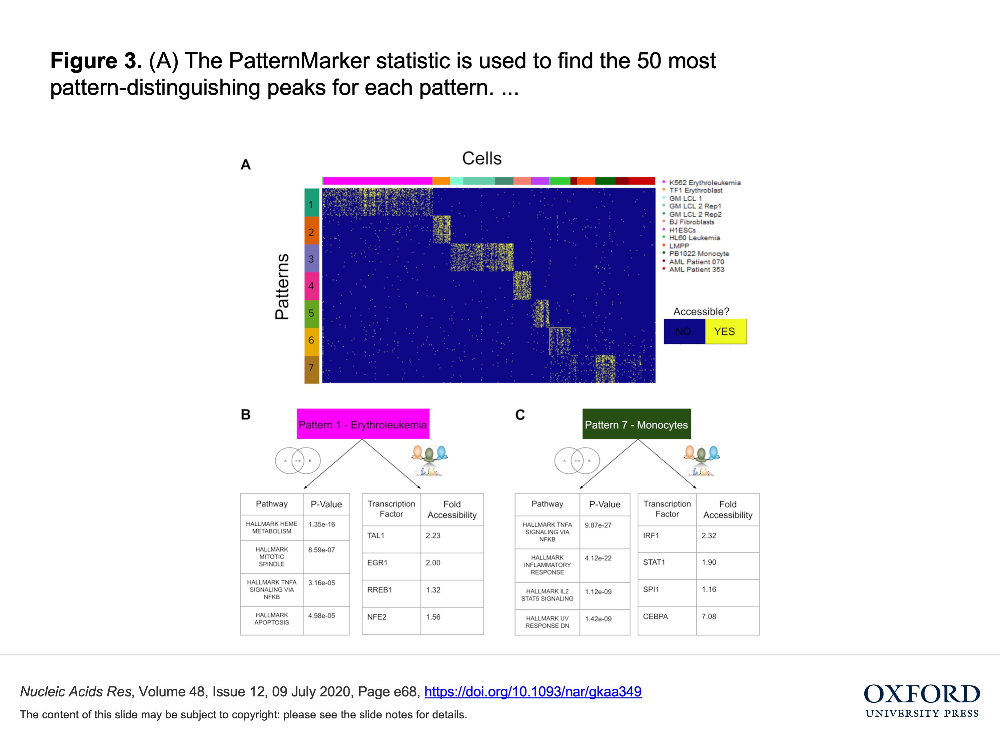
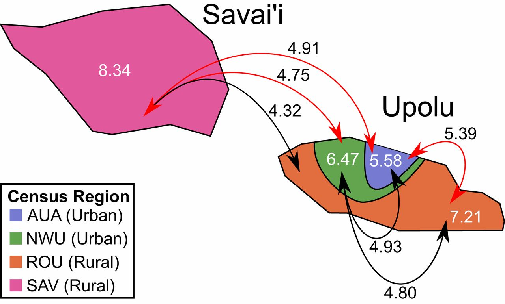
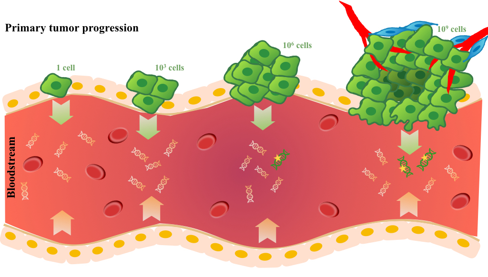
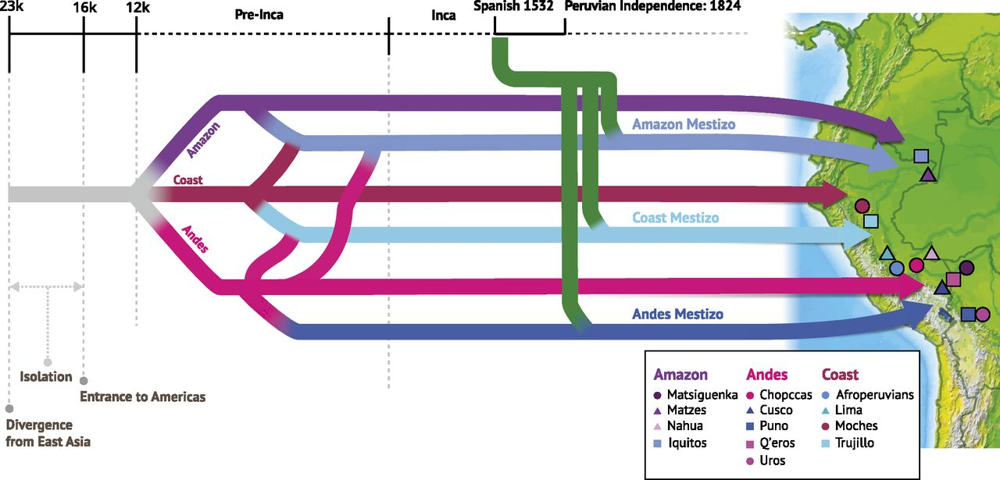
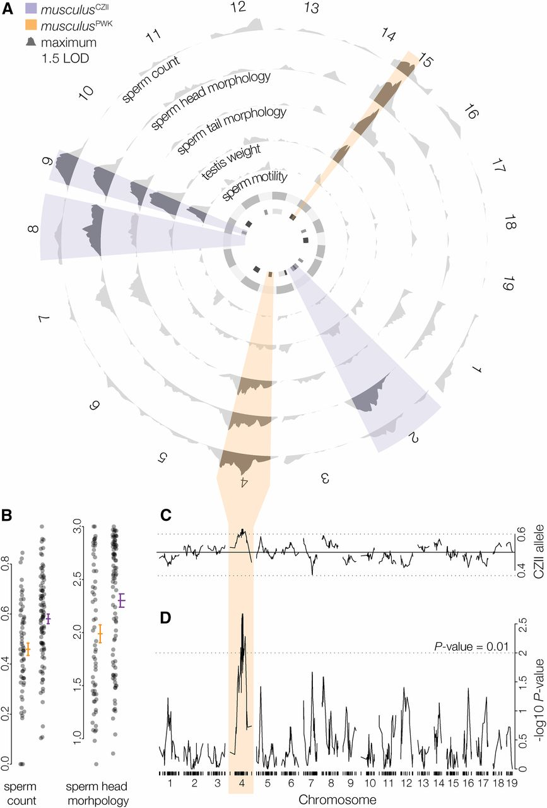
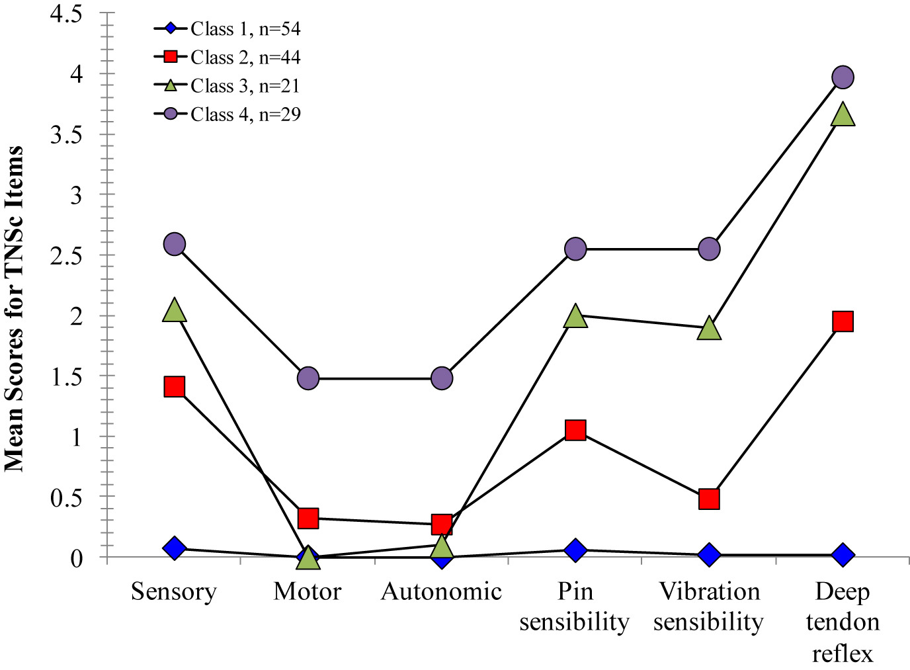
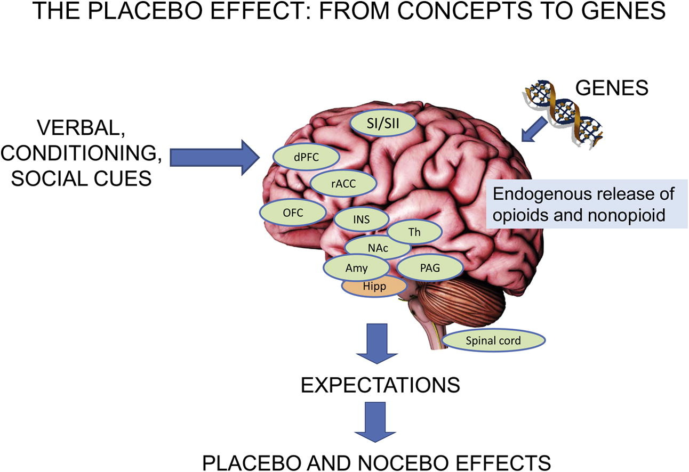
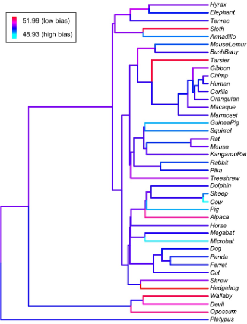
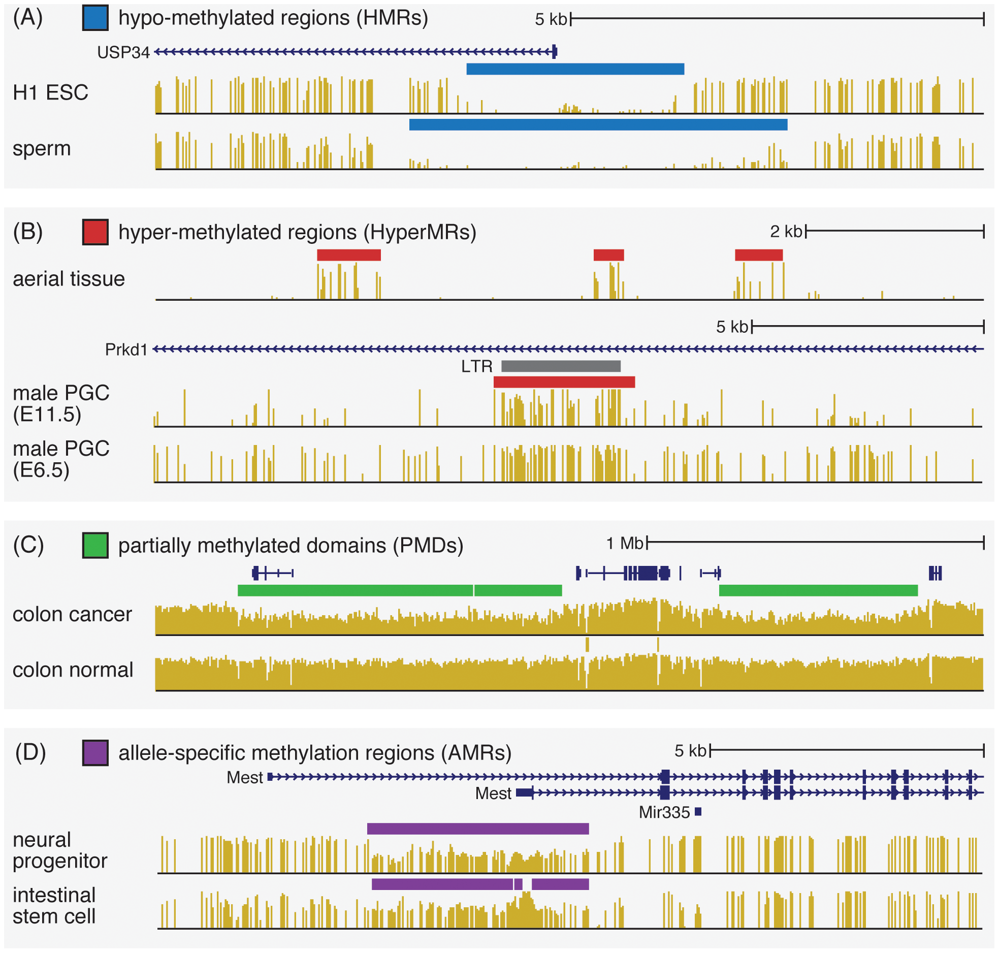

Michael D. Kessler
I am a bioinformatic scientist with wide ranging experience in oncology, genetics and genomic.
My research interests lie at the intersection of human genetics, cancer genomics, and translational bioinformatics, and I work to leverage data science tools and techniques to inform increasingly personalized and precise medical care.
2020
|

|
Matrix factorization and transfer learning uncover regulatory biology across multiple single-cell ATAC-seq data sets
Rossin Erbe, Michael D. Kessler, Alexander V. Favorov, Hariharan Easwaran, Daria A. Gaykalova, Elana J. Fertig Nucleic Acids Research 2020 |
|

|
Evolutionary history of modern Samoans
Daniel N. Harris, Michael D. Kessler, Amol C. Shetty, Daniel E. Weeks, Ryan L. Minster, Sharon Browning, Ethan E. Cochrane, Ranjan Deka, Nicola L. Hawley, Muagututi‘a Sefuiva Reupena, Take Naseri, Trans-Omics for Precision Medicine (TOPMed) Consortium, TOPMed Population Genetics Working Group, Stephen T. McGarvey, and Timothy D. O’Connor Proceedings of the National Academy of Sciences 2020 |
|
|
De novo mutations across 1,465 diverse genomes reveal mutational insights and reductions in the Amish founder population
Michael D. Kessler, Douglas P. Loesch, James A. Perry, Nancy L. Heard-Costa, Daniel Taliun, Brian E. Cade, Heming Wang, Michelle Daya, John Ziniti, Soma Datta, Juan C. Celedón, Manuel E. Soto-Quiros, Lydiana Avila, Scott T. Weiss, Kathleen Barnes, Susan S. Redline, Ramachandran S. Vasan, Andrew D. Johnson, Rasika A. Mathias, Ryan Hernandez, James G. Wilson, Deborah A. Nickerson, Goncalo Abecasis, Sharon R. Browning, Sebastian Zöllner, Jeffrey R. O’Connell, Braxton D. Mitchell, National Heart, Lung,, and Blood Institute Trans-Omics for Precision Medicine (TOPMed) Consortium, TOPMed Population Genetics Working Group, and Timothy D. O’Connor Proceedings of the National Academy of Sciences 2020 |
2019
|
|
Ancestral characterization of 1018 cancer cell lines highlights disparities and reveals gene expression and mutational differences
Michael D. Kessler, Nicholas W. Bateman, Thomas P. Conrads, George L. Maxwell, Julie C. Dunning Hotopp, Timothy D. O’Connor Cancer 2019 |
2018
|

|
Improving Cancer Detection and Treatment with Liquid Biopsies and ptDNA
Michael D. Kessler, Nisha R.Pawar, Stuart S. Martin, Toni M. Antalis, Timothy D. O’Connor Trends in Cancer 2018 |
|

|
Evolutionary genomic dynamics of Peruvians before, during, and after the Inca Empire
Daniel N. Harris, Wei Song, Amol C. Shetty, Kelly S. Levano, Omar Cáceres, Carlos Padilla, Víctor Borda, David Tarazona, Omar Trujillo, Cesar Sanchez, Michael D. Kessler, Marco Galarza, Silvia Capristano, Harrison Montejo, Pedro O. Flores-Villanueva, Eduardo Tarazona-Santos, Timothy D. O’Connor, and Heinner Guio Proceedings of the National Academy of Sciences 2018 |
|

|
The Evolution of Polymorphic Hybrid Incompatibilities in House Mice
Erica L. Larson, Dan Vanderpool, Brice A. J. Sarver, Colin Callahan, Sara Keeble, Lorraine L. Provencio, Michael D. Kessler, Vanessa Stewart, Erin Nordquist, Matthew D. Dean, Jeffrey M. Good Genetics 2018 |
2017
|
|
Accurate and equitable medical genomic analysis requires an understanding of demography and its influence on sample size and ratio
Michael D. Kessler and Timothy D. O'Connor Genome Biology 2017 |
|

|
Oxaliplatin-Induced Peripheral Neuropathy and Identification of Unique Severity Groups in Colorectal Cancer
Kathleen A. Griffith, Shijun Zhu, Meg Johantgen, Michael D.Kessler, Cynthia Renn, Andreas S. Beutler, Rahul Kanwar, Nicholas Ambulos, Guido Cavaletti, Jordi Bruna, Chiara Briani, Andreas A. Argyriou, Haralabos P. Kalofonos, Laura M.Yerges-Armstrong, Susan G. Dorsey Journal of Pain and Symptom Management 2017 |
2016
|
|
Challenges and disparities in the application of personalized genomic medicine to populations with African ancestry
Michael D. Kessler, Laura Yerges-Armstrong, Margaret A. Taub, Amol C. Shetty, Kristin Maloney, Linda Jo Bone Jeng, Ingo Ruczinski, Albert M. Levin, L. Keoki Williams, Terri H. Beaty, Rasika A. Mathias, Kathleen C. Barnes, Consortium on Asthma among African-ancestry Populations in the Americas (CAAPA) & Timothy D. O’Connor Nature Communications 2016 |
2015
|

|
The placebo effect: From concepts to genes
B. Colagiuri, L. A. Schenk, Michael D. Kessler S. G. Dorsey, L. Colloca Neuroscience 2015 |
2014
|

|
Effective population size does not predict codon usage bias in mammals
Michael D. Kessler and Matthew D. Dean Ecology and Evolution 2014 |
2013
|

|
A Reference Methylome Database and Analysis Pipeline to Facilitate Integrative and Comparative Epigenomics
Qiang Song, Benjamin Decato, Elizabeth E. Hong, Meng Zhou, Fang Fang, Jianghan Qu, Tyler Garvin, Michael D. Kessler, Jun Zhou, Andrew D. Smith PLOS ONE 2013 |
ADD BIO